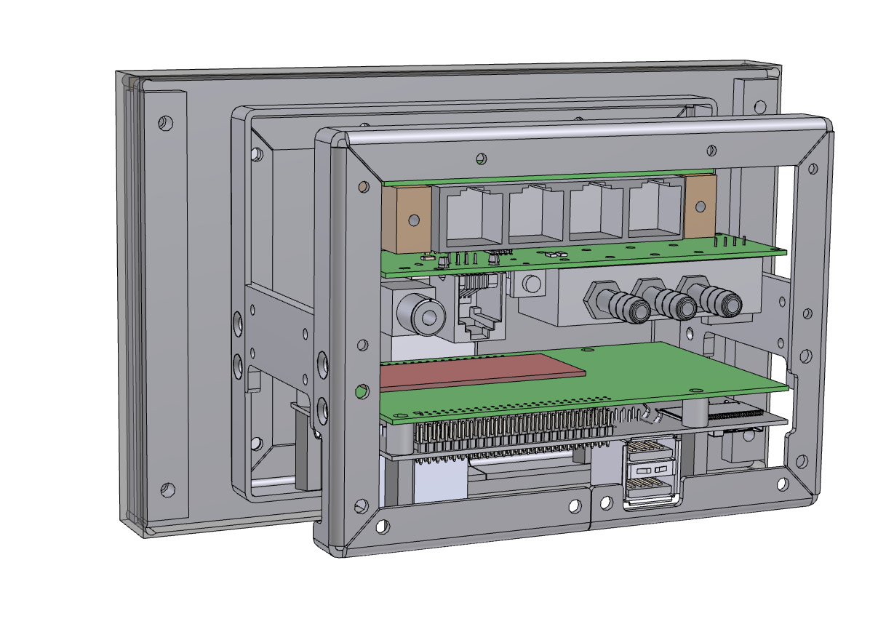
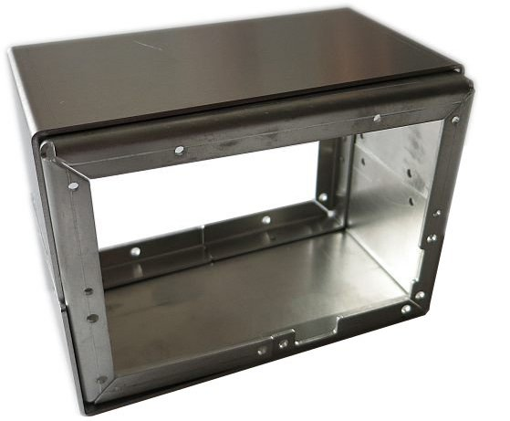
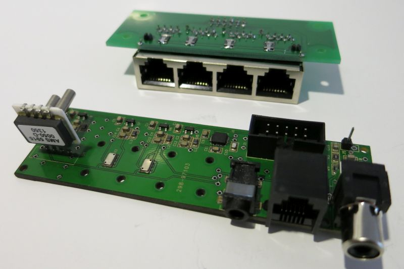
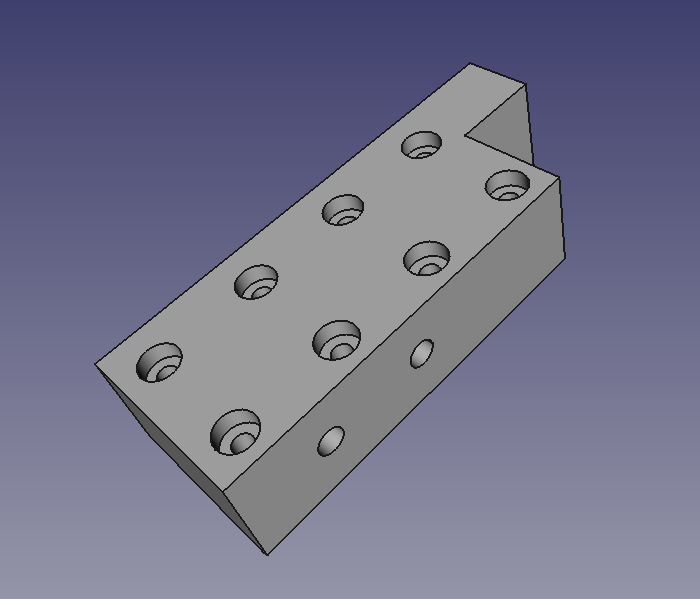
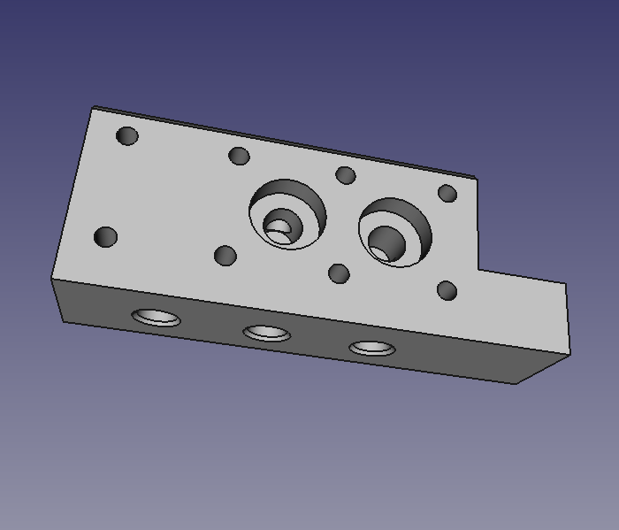
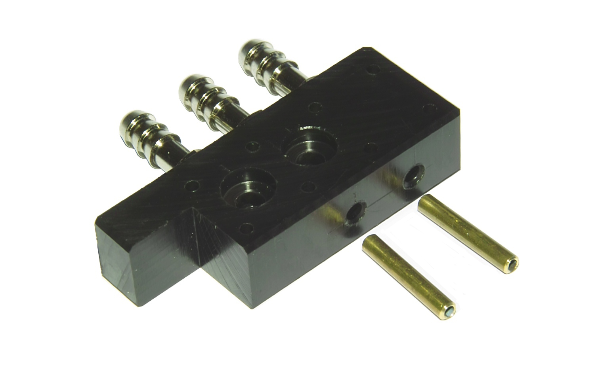
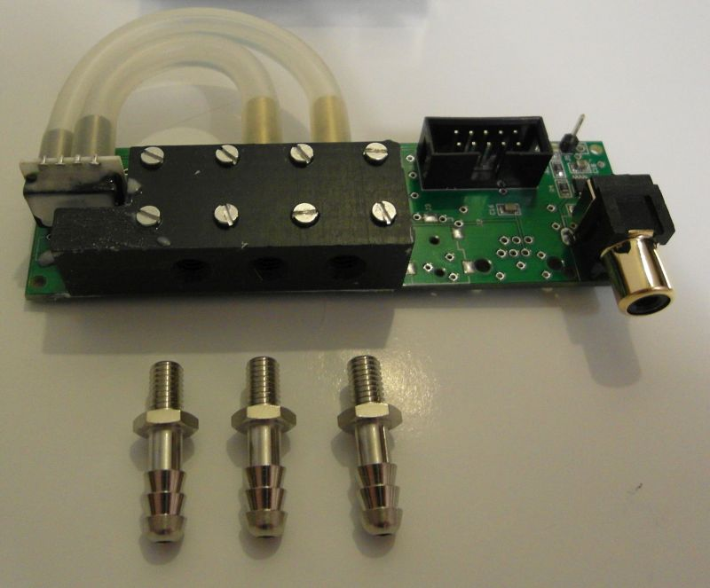

Mechanics
3D Model

Here you can see a nice 3-D model (donated by Tamás) of the OpenVario Flight Computer, showing the housing with the PCBs in situ, the outer cover is removed for better insight. This 3-D-pdf-model is very interesting for visualisation of the OpenVario Mechanics and can be downloaded here: Openvario 7" as 3D-PDF-Model You can open it using the Adobe Reader X (most other pdf-readers won't work). There is a wide range of possibilities to measure dimensions, zoom, rotate, use a different illumination, transparency and much more. Check it out…Housing

The housing is designed from aluminum sheet metal for easy manufacturing on hobby CNC machines. You have no CNC machine available? Ask one of your radio controlled model building friends, and chances are good he can point you to someone who knows someone… - you get it All main parts but the front frame are made from 1.5mm or 3mm aluminum sheet and have provisions for easy bending. On the backside it gives access to the Cubieboards' µSD card slot and USB connectors. On your desk with the lower cover removed, Ethernet and HDMI ports can be accessed for development. The back of the housing allows easy implementation of additional connectors for extensions (like sensorboard and RJ45 board), not to forget the hose-connectors to the airplane's pressure system. More details about the housing and assembly are found in the assembly guide and under Preparing the housingTube connectors
The MS5611 pressure sensors used on the sensorboard have great performance and come at a very reasonable price, but unfortunately without barbed tube connectors

Therefore we designed a POM-Block to be mounted on the Sensorboard-PCB, which has some threads for the three pressure barbs to connect to the airplane pressure system. Two chambers encapsulate the MS5611-Sensors for altitude and vario, and one hole goes through. Two brass tubes at the backside of the POM-Block are connected to the differential pressure sensor for airspeed via two short silicone hoses.


The Block is made from some 1/2“ sheet of black POM, which has excellent machining characteristics and durability. Prepare the basic part as shown in the DXF, ream the 2.9mm holes for a slight press fit of 3mm brass tubes and cut M5 threads for the barbed tube connectors. Before you start sealing the POM-Block, electrical testing of the Sensorboard is recommended.

Press fit two short pieces (~15mm) of 3mm brass tube, seal the part against the PCB and attach it with 8pcs M2x16 screws. Sikaflex PUR based sealant works fine, don´t use silicone based products, it might damage the sensors. The sensorboard is mounted to the housing backplate by the barbed tube connectors, don´t forget to apply some sealant in the threads during assembly.

Two further rectangular blocks are needed to mount the RJ45-Board to the backplate of the OpenVario, but their dimensions are not really critical.